A CSR-funded solar dehydration initiative that gave rural women in Jammu & Kashmir and Telangana a dignified, zero-energy-cost livelihood — while rescuing tonnes of fruit and vegetables that would otherwise have gone to waste.
Across rural India, large quantities of fruit, vegetables and herbs perish every season for want of basic preserving, processing and marketing infrastructure. Industry estimates suggest that 35–40% of all fruits and vegetables produced never reach the end consumer — rotting in fields, in transit, or in unsold market stock. As this food waste decomposes, it releases methane, a greenhouse gas nearly 23 times more potent than CO₂. If food waste were a nation, it would rank as the third-largest emitter of greenhouse gases in the world, after China and the United States.
Project Ravi Kiran was Gramonnati Trust's answer to this problem — built around a simple, elegant technology: solar dehydration. On an average day, sunlight delivers roughly 1,367 watts of heat energy per square metre. By drawing warm, dry air across the surface of fruits and vegetables, a solar dryer removes 80–90% of their moisture at an ambient temperature of 55–65°C — with zero electricity, zero fuel, and zero emissions. The result: nutritious, shelf-stable dried produce, and a sustainable livelihood for the rural women who run the drying units.
The project integrated three goals into a single model: rescuing perishable produce from farmers and Farmer Producer Organisations (FPOs), creating dignified livelihoods for rural women (and, in time, ex-servicemen households), and building environmentally sustainable micro-enterprises that could be replicated across other regions.
Backed by CSR funding from NIIF (National Investment & Infrastructure Fund) through its CSR implementation partner Athaang, Gramonnati Trust signed its MoU on 3 August 2022 and set up solar drying facilities at two very different ends of the country — testing the model in the cold, high-altitude valleys of Kashmir and the warm agricultural belt of Telangana.
Every Project Ravi Kiran site ran the same end-to-end value chain — designed so that local women, once trained, could operate and maintain the equipment themselves with minimal outside support.
Unsold or surplus fruits, vegetables and herbs purchased directly from local farmers and FPOs.
Washing, sorting, pulping and slicing — done by trained local women.
1–2 days in solar dryers at 55–65°C, removing 80–90% moisture, down to roughly 28% of original weight.
Slicing, rolling and shaping into finished formats — including no-sugar fruit rolls and energy bars.
Nutrition testing, compliance certification, and creative packaging — under the Gratitude Farms brand.
Local markets, Army units and establishments, corporate gifting, and bulk/online sales.
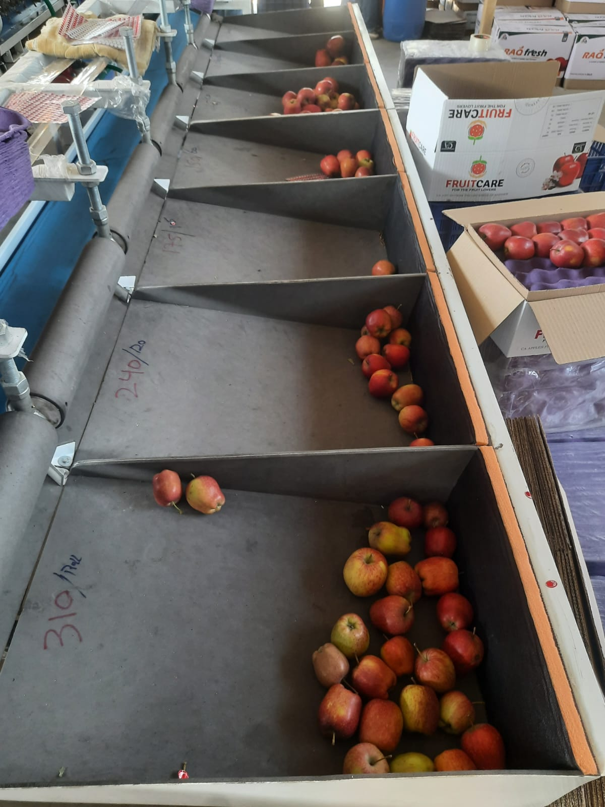
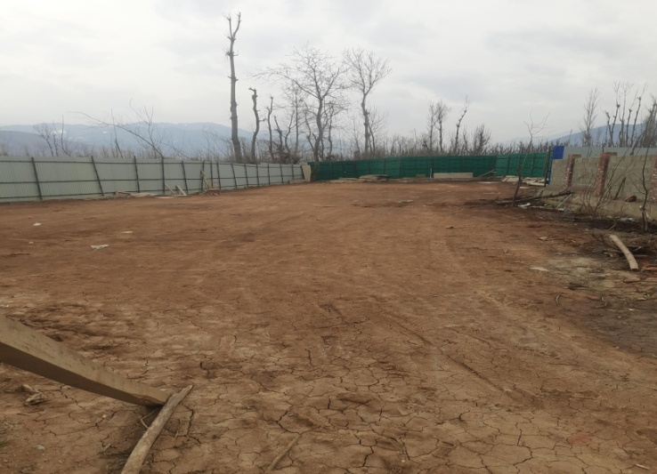
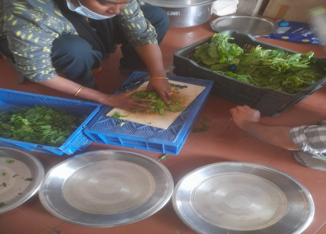
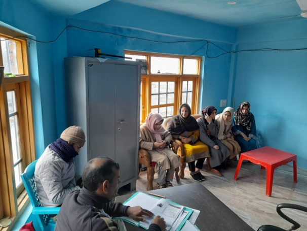
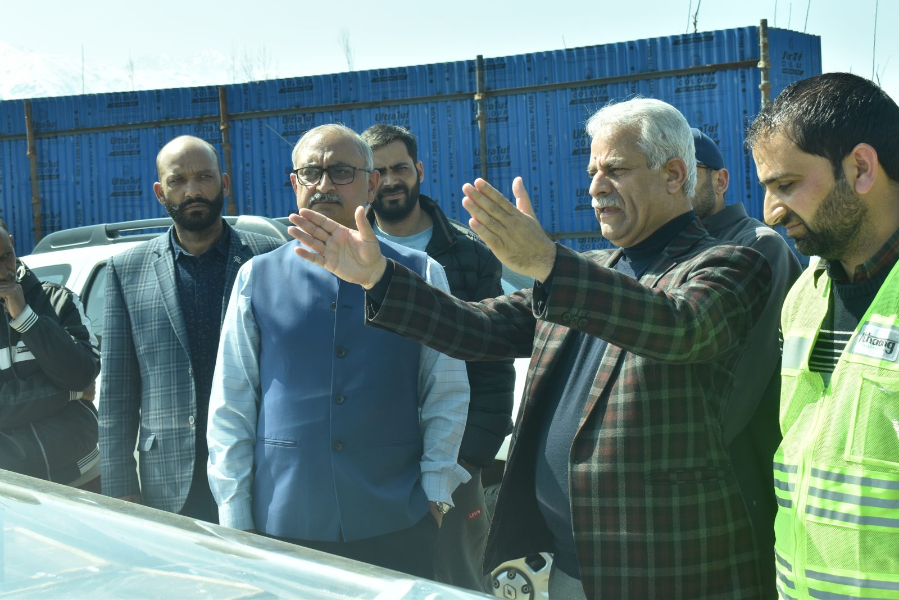
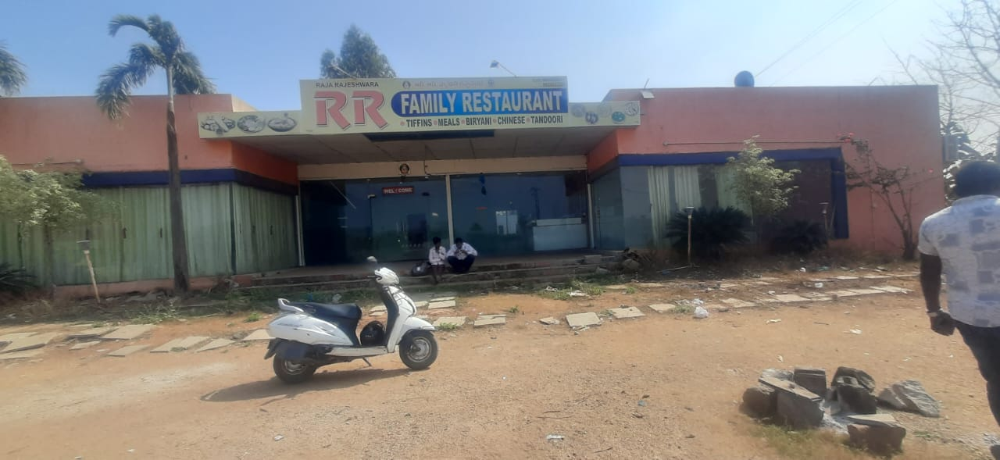
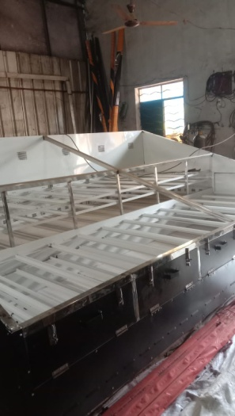
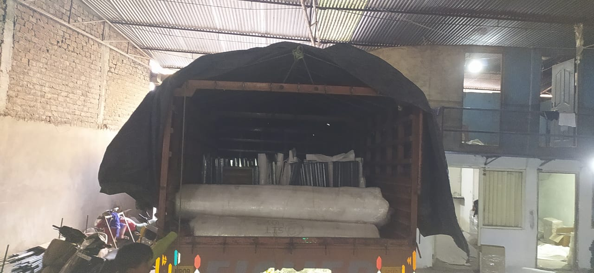
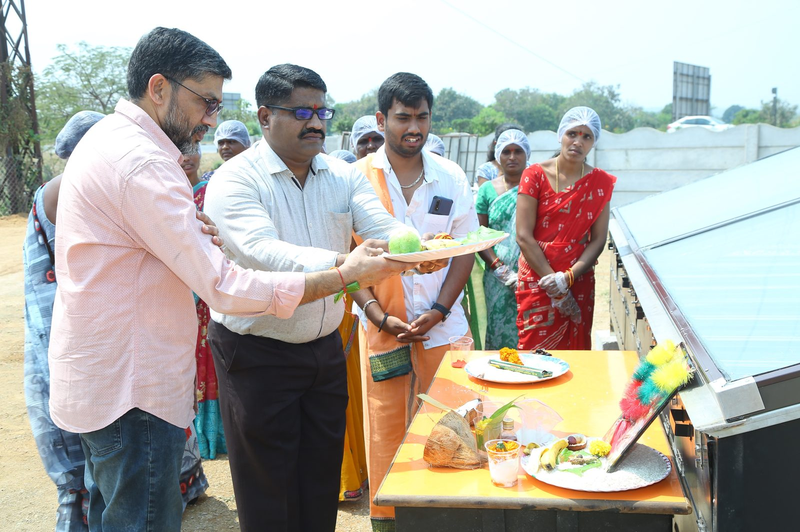
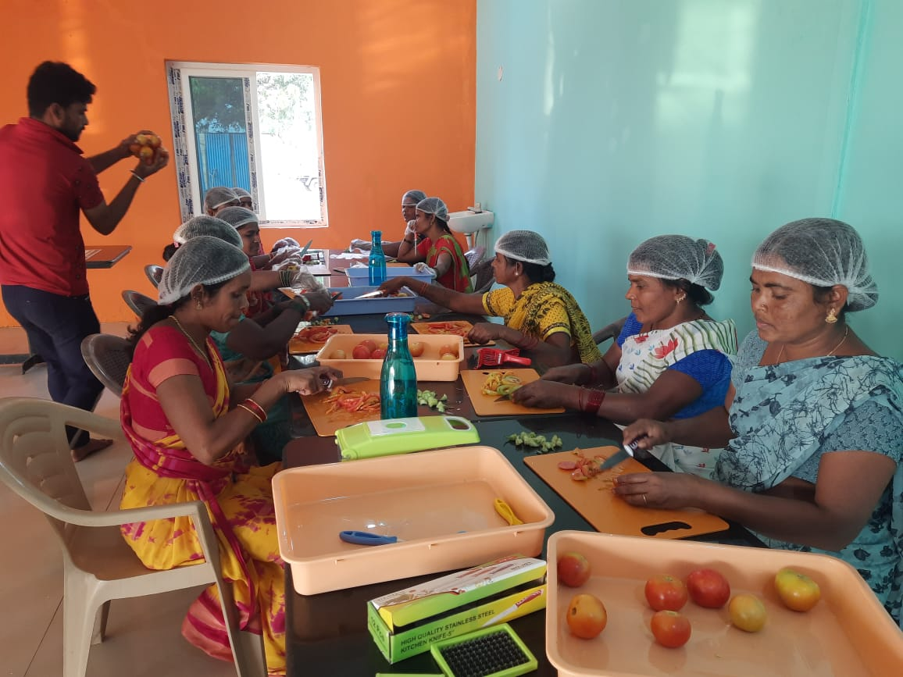
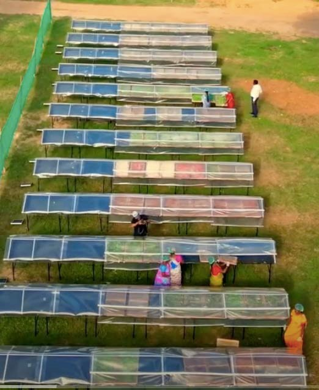
Every finished product was sold under Gratitude Farms, Gramonnati's own brand for solar-dried produce — marketed proudly as "An Ex-Soldiers' Enterprise." Products were tested for nutrition and compliance before sale, and channelled through local markets, Army units and establishments, corporate gifting, and bulk/online sales.
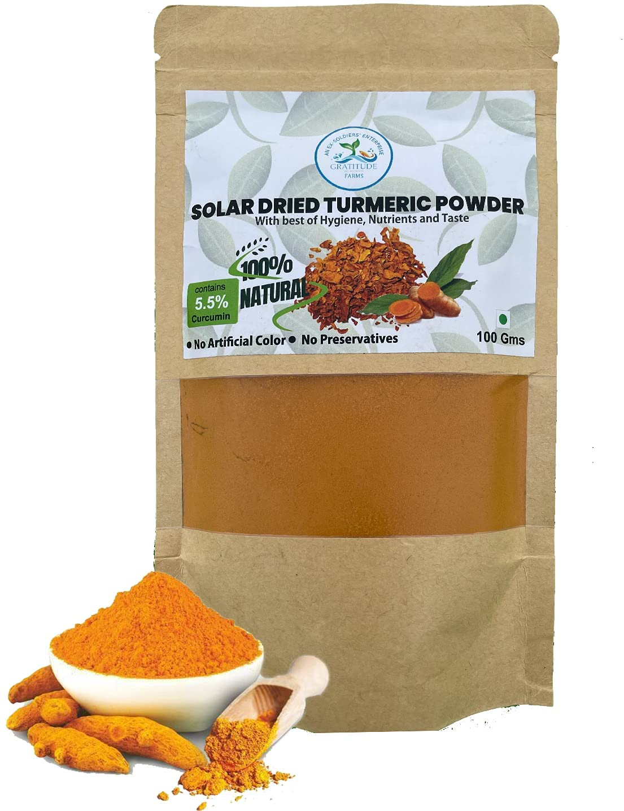
100% natural, no artificial colour or preservatives, 5.5% curcumin content — dried entirely using solar energy.
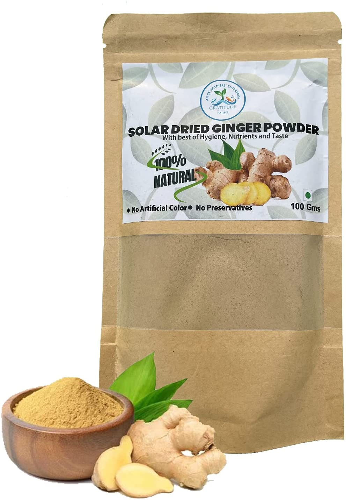
100% natural, no artificial colour or preservatives — made from fresh ginger sourced through local FPOs.
| Location | Products (Year 1 Plan) | Planned Output |
|---|---|---|
| Qazigund, J&K | Fruit rolls — apple, plum, peach, apricot, pear, walnut (seasonal) | ~34.4 tonnes |
| Dichpally, Telangana | Dehydrated mangoes, tomatoes, onions, ginger & garlic, guava & banana | 24 tonnes (6t mango / 6t tomato / 6t onion / 3t ginger-garlic / 3t guava-banana) |
| Dichpally, Telangana | Moringa, ginger and turmeric powders | Work-in-progress product line |
Indicative pricing: raw produce sourced at roughly ₹10–15/kg; finished dried products sold at roughly ₹300–500/kg.
Project Ravi Kiran's Year-1 plan for Qazigund alone called for direct livelihoods to 45 rural women across 2–3 Self-Help Groups, each earning an average of ₹6,000 per month (₹32.4 lakhs in total payouts for the year) — funded by a one-time CSR capital investment, with the unit designed to become self-sustaining within its first year of operation.
| Metric (Qazigund, J&K — 5-Year Plan) | Year 1 | Year 5 | 5-Year Total |
|---|---|---|---|
| One-time CSR capex | ₹97.05 lakhs | — | ₹97.05 lakhs |
| Production (kg/year) | 34,474 kg | 38,778 kg | 185,169 kg |
| Payout to 45 women (₹/year) | ₹32.4 lakhs | ₹36.4 lakhs | ₹174.0 lakhs |
| Estimated annual surplus | ₹7.7 lakhs | ₹22.0 lakhs | ₹75.1 lakhs |
| Cumulative surplus (reinvested at 5% FD for expansion) | ₹7.7 lakhs | ₹190.8 lakhs | — |
Figures above are drawn from Gramonnati Trust's original Year-1 project plan and five-year financial projections for the Qazigund site (December 2022), shared with the NIIF CSR team. They represent planning estimates, not audited actuals — and should be refreshed with verified production and payout data before being treated as a public impact claim.
Project Ravi Kiran was made possible by CSR funding from NIIF through Athaang, and delivered with technology, sourcing and training support from a network of specialist partners.
With special thanks to Mr Ashok Emani, Mr Pranay Krishan, and Mr BJV Prasad Rao and team at NIIF/Athaang for their constant support and guidance.
Project Ravi Kiran proved that a simple, zero-energy-cost technology — paired with rural women's skill and effort — can turn wasted produce into income, nutrition and dignity. It's a model Gramonnati Trust continues to draw on as it builds its next generation of community-led infrastructure.